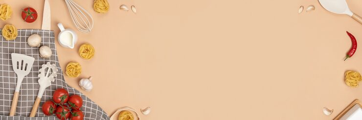

Bienvenue à la cantine d'Odin

Vous trouverez ici quelques recettes végétarienne, spécialement apprécié par Odin
lui même !
La fameuse
Tarte au Chèvre et ses Petits Pois
Le généreux Croque-Cake
à partager
AUX CHAMPIGNONS
Le délicieux Gratin de pâtes
farcies
aux épinards et pois chiches